Chapter 7. Alarms
Alarms are one of the key features of Early Warning, Alert and Response System (EWARS), as they help to raise early awareness of potential outbreaks, thereby facilitating prompt action from stakeholders. By leveraging the alarms function, users can set predefined criteria to detect unusual trends. When these trends are detected, the system can alert other users and initiate necessary actions to achieve resolution. This chapter will help users create, configure, edit and turn off alarms, as appropriate. Stakeholders are thus empowered to take swift action, saving lives in the process.
7.1 Alarms and their uses
Fig. 7.1. shows how alerts are triggered, based on criteria set in alarms.
Fig. 7.1. How alarms work
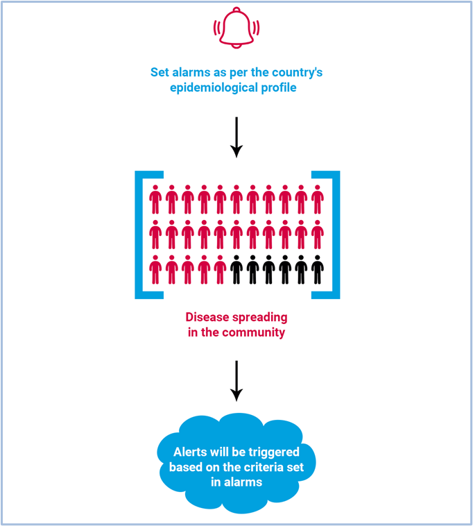
Alarms are set based on the criteria users allocate to each disease or event, based on the prevailing conditions. To put this in perspective, one case of suspected viral haemorrhagic fever (VHF) or a doubling of acute watery diarrhoea (AWD) cases in a primary health-care centre (PHCC), should sound an alarm in the system.
The alarm can be attached to any disease, condition or event. The alert threshold is the level at which point the alarm bell should be ringing, alerting everyone responsible. There is no real alarm bell, and no audible ringing as such, but the bell sign is used to indicate “alarm” in the system. For example, a suspected case of acute flaccid paralysis (AFP) should ring an alarm. Rumours of clusters of deaths should also ring an alarm.
How to manage raised alerts is dealt with in Chapter 13. Alert log. Alert thresholds are generally standardized – especially for immediately notifiable diseases. Refer to national, regional or global surveillance guidance for more information on setting alert thresholds.
EWARS provides some sample alarms in the Model account, which you can copy and then make required changes. Alternatively, you can set new alarms relevant to your country.
7.2 Copying sample alarms
You can copy the sample alarms in the Model account and make changes according to your country’s requirements.
- Select Menu > Configuration Transfer. Select Model account from the Source Account drop-down menu. The system lists all transferable items. Search and select the sample alarms(e.g. Measles). Click on the transfer icon, and the chosen alarms are copied to your account.
7.3 Creating and configuring an alarm
You can set up new alarms from scratch according to your country’s epidemiological profile. First, identify which priority diseases/conditions/events you need to set an alarm for. Next, define a threshold: this is the level at which the system will inform epidemiologists and surveillance officers that a potential threat has been detected. This threshold can be a report of a single case, an event or a worrying trend, based on an analysis of data over a period.
7.3.1 Creating an alarm
You can set an alarm based on submission of a report (record-based alarm) or on a departure from the trend (aggregate-based alarm). Fig. 7.2 shows the flowcharts for these two methods.
Fig. 7.2. Ways to set an alarm
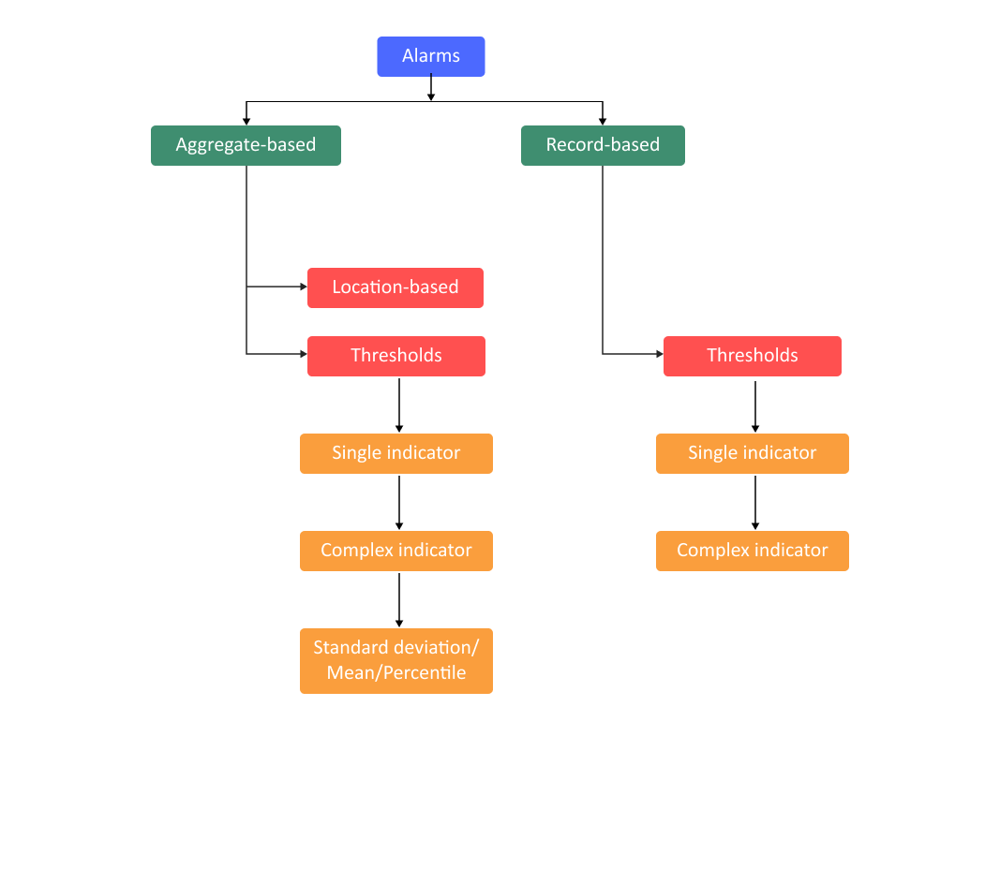
 Go thr Go thr |
ough the reporting forms in EWARS and decide which diseases, events or conditions you need to set up alarms for. Then, refer to surveillance and early warning guidance documents to identify the standard alert thresholds for each disease, condition or event. An “alert” is the first hint of a larger public health problem. Once an alarm is set for a particular disease or condition, all individuals in the reporting pathway are informed of the potential threat. |
- Select Menu > Alarms. Click on
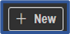
, and the screen below appears:
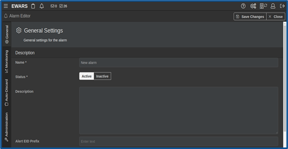
- Populate the details in the General tab as set out below.
Name [Mandatory]: enter the name of the alarm. It is usual to add the name of the disease or the condition to the alarm (e.g. Malaria or VHF).
Status [Mandatory]: set status as active.
Active alarms can trigger alerts.
Inactive alarms cannot trigger alerts.
Description: enter a description of the alarm (e.g. “Raise an alert when a Reporting User reports more than 10 malaria cases”). Ideally, include the alert threshold in the description.
Alert electronic identification (EID) Prefix: set an alert EID prefix. The prefix is concatenated with the alert EID; this helps to create a unique identification for an alert. For example, if the prefix is set as SARS, the alert EID is SARS-0A-354C-5230-3462.
Tags: enter tags for the alarm. A tag is an identifier that will help you find your alarm in the Configuration Transfer. You can add one or more tags.
- Click on Save Change(s), and an alarm is created.
7.3.2 Configuring an alarm as a record-based alarm
For record-based alarms, the data source is a single report. In brief, every report will trigger an alarm in the system. This is vital for event-based surveillance or surveillance reporting from the community on clusters of cases and deaths or unknown diseases.
The following example shows how to raise an alert when a Reporting User reports an event using an event-based form.
Select Menu > Alarms. Click on the edit icon of alarm (e.g. Measles) > click on the Monitoring tab > click on Record-based.
Set Monitored By as Indicator > select System > Form submissions from the Source Indicator drop-down menu > select Event-Based Surveillance Form from the Form drop-down menu > select Submitted from the Dimension drop-down menu > keep Source as No selection.
 Note: if you don’t specify the source (i.e. no selection), it will include reports submitted from EWARS Web as well as EWARS Mobile.
Note: if you don’t specify the source (i.e. no selection), it will include reports submitted from EWARS Web as well as EWARS Mobile.
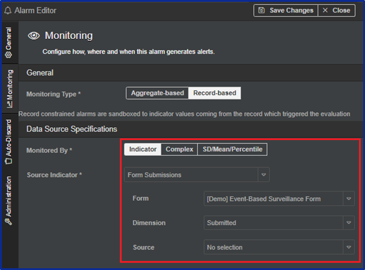
Select the Comparator (e.g. >=) > enter the threshold Value (e.g. 1).
Click on Save Change(s), and the alarm is configured.
7.3.3 Configuring an alarm as an aggregate-based alarm
For aggregate-based alarms, the data are sourced from multiple reports. Data submitted during a specific period are used to evaluate the alarms. This is vital to acquire information about whether a particular disease or condition is on the rise at greater than expected levels for the location and season. Similarly, it is needed to detect diseases whose presence (even one suspected case) is important and needs notification (e.g. cases of VHF, AFP and similar).
The following steps show how to set up aggregate-based alarms using the various source specifications.
- Select Menu > Alarms. Click on the edit icon of the relevant alarm (e.g. Malaria) > click on the Monitoring tab > click on Aggregate-based, and the screen below appears:
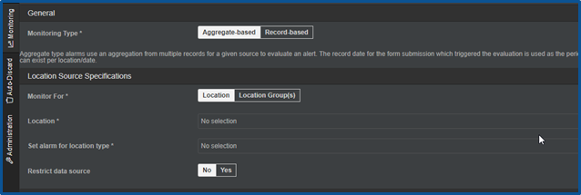
7.3.3.1 Specifying the monitoring location or groups
Either set Monitor For as Location if an alarm is to monitor a particular geographical location > select the geographical locations you want to monitor from the drop-down menu (e.g. country, province or district)
Or set Monitor For as Location Group(s) if an alarm is to monitor a group of locations (e.g. a group of PHCCs managed by a nongovernmental organization (NGO) such as Médecins Sans Frontières or the International Committee of the Red Cross).
7.3.3.2 Specifying the location type
- Select the location type for which you want to set the alarm. The alarm is set for the entire location type selected, as follows:
for country-level alarms, set location type to Country
for province-level alarms, set location type to Province
for health facility-level alarms, set location type to Health Facility.
7.3.3.3 Restricting the data source
Either set Restrict data source to No, and all reports submitted are considered for alarm evaluation
Or set Restrict data source to Yes, and only the reports of the selected location type are considered for alarm evaluation. You can select the location type in the Data reported on location type field.
- For example, if location type is set as health facility, only those reports with reporting location type health facility are considered for alarm evaluation.
| Note: when you set an alarm for location type, the alarm is evaluated based on specification of the location type (e.g. a mobile clinic, laboratory or health post). In this situation, an alarm will be triggered for each location type, whereas if you set the source of data by location type, you indicate what data sources should be considered for triggering alarms; for example, select PHCC if you want to use data reported from PHCCs to trigger the alarm, or select mobile clinics if you want to aggregate data reported from mobile clinics for this alarm. |
7.3.3.4 Configuring the data source interval
The data source interval can be set as a fixed Interval (daily, weekly, monthly or yearly). The example below shows the data source interval set as the current calendar week:
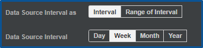
The data source interval can also be set as a specified Range of Intervals (biweekly, quarterly, every three months and so on). If set as a range, you also need to provide a figure for the number of intervals. The example below shows the data source interval set as three-monthly:
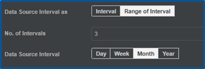
Note: the three-month interval includes the current calendar month and the previous two months.
The example below shows the data source interval set as every 10 days:
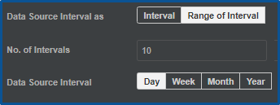
7.3.3.5 Configuring the data aggregation
Either set Aggregation as Sum, and data from all the reports for the specified interval are aggregated as a sum
Or set Aggregation as Average, and data from all the reports for the specified interval are aggregated as a sum and then divided by the number of submitted reports in the specified interval, creating an average per report.
7.3.3.6 Configuring the monitored by field
The form field monitored by has three options: Indicator, Complex and SD/Mean/Percentile. These are set out below with their sub-options.
If Monitored by is set as Indicator, this sets a threshold for a single indicator.
- Set Monitored by as Indicator > select the Source Indicator from the drop-down menu.
If Monitored by is set as Complex, this sets a threshold for a complex indicator.
- Set Monitored by as Complex, and you can consider more than one indicator and formula – for example the COVID-19 test positivity rate = (number of cases/number of tests) × 100.
If Monitored by is set as SD/Mean/Percentile, the standard deviation (SD), Mean average and Percentile of historical data for a given date range or specified weeks are automatically calculated. For this option to work, you have to input historical data into the system. It will not work without existing data to refer to.
- Set Monitored by to SD/Mean/Percentile > select the Source Indicator from the drop-down menu. The Interval is pre-set as Week: this can’t be changed. Select a Pre-Configured Formula or enter a Formula manually.
- For example, to establish whether the Indicator value is Higher than 1SD, select the Pre-Configured Formula for Higher than 1SD, [IDV – (MEAN + SD)] from the drop-down menu.
| Note: when you want to develop your own formulas, use the following abbreviations to indicate commonly use statistical terms: SD for standard deviation, MEAN for mean, IDV for indicator value (i.e. the value you want to compare against data), and PERCENTILE for percentile. Always add absolute values (positive values), the use of the abs () function is allowed in the formula. |
Either set Exclude zero value to Yes, and any zero value intervals within the specified interval are ignored in the calculation of SD, Mean and Percentile
Or set Exclude zero value to No, and no intervals are ignored in the calculation.
7.3.3.7 Configuring seasonal variation
Either set Seasonal Variation to No and provide a Date Range – historical data from the date range specified are considered in the calculation of SD, Mean and Percentile
Or set Seasonal Variation to Yes and populate the No. of +/- Weeks and No. of previous years fields. Historical data from the weeks and years specified are considered in the calculation of SD, Mean and Percentile. If you set Seasonal Variation as Yes, the system calculates the average of the previous years. For example, if the number of previous years is set as 3 and the current year is 2021, the system considers the averages of June 2020, June 2019 and June 2018.
7.3.3.8 Specifying the criteria for triggering alerts
- Select the Comparator (e.g. >) and enter a value to be compared (e.g. 0), as show below:
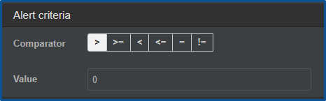
- Click on Save Change(s).
7.3.3.9 Examples of aggregate-based alarms
For demonstration purposes, this guide uses the following six examples.
Example 1. Raise an alert when there are more than five malaria cases in a month.
|
|---|
Example 2. Set an alarm to trigger an alert on malaria total cases.
|
|
|---|---|
Example 3. Trigger an alert when malaria total cases are higher than 110% of the average of the last three weeks.
|
|
|---|---|
Example 4. Trigger an alert when the current week’s count for under 5 years malaria cases is greater than the 110% of the mean value for the previous 52 weeks.
|
|
|---|---|
Example 5. Trigger an alarm if current reporting is more than the 75th percentile for the last three years.
|
|
|---|---|
Example 6: Trigger an alert when the under 5 years count of malaria cases is greater than the corresponding moving average of three weeks for the last three years (> mean + 2SD). This is for seasonality, to see whether the value is statistically different from the corresponding weeks of the last three years.
|
|
|---|---|
7.4 Enabling auto-discard of an alert
Once an alert is triggered, you are expected to conduct a verification rapidly. Therefore, you are not expected to discard alerts without verification. However, after a long lapse of time, the system allows you to auto-discard alerts. For example, if an alert is not verified after three months, you may set the conditions to discard it. When discarded it will not appear under open alerts, indicating that you need to take action.
By default, the auto-discard setting is off, but when enabled, the system automatically discards a specified alert after a defined period.
The following example shows you how to auto-discard an alert after two weeks.
- Select Menu > Alarms > click on the edit icon of the relevant alarm (e.g. Malaria) > click on the
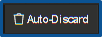
tab, and the screen below appears:
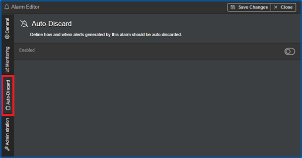
Click on the toggle icon to enable it, and the icon colour changes to green.
Set Auto-discard interval to Week(s) > set No. of Intervals to “2”.
Click on Save Change(s).
7.5 Running an evaluation of an alarm manually
An alarm evaluation is done by the system automatically whenever a new report is submitted, but the Account Administrator can also evaluate it manually.
- Select Menu > Alarm. Click on the edit icon of the relevant alarm (e.g. Malaria) > click on the
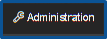
tab, and the screen below appears:
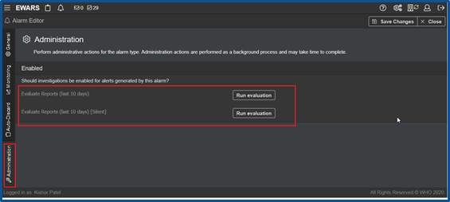
Either click on Run evaluation to evaluate the reports submitted within the last 10 days – if the evaluation meets the alarm criteria, it triggers an alert and sends an email notification for the triggered alerts
Or click on Run evaluation [Silent], which evaluates the reports submitted within the last 10 days but does not send any email notifications for the triggered alerts, if any.
| Note: silent action won’t override email alert notification settings set in the profile. |
7.6 Editing an alarm
- Select Menu > Alarm. Click on the edit icon of the relevant alarm (e.g. Malaria) > make the desired changes. Click on Save Change(s).
7.7 Turning off an alarm
- Select Menu > Alarm. Click on the edit icon of the relevant alarm (e.g. Malaria) > set Status as Inactive, and the alarm is inactivated. Click on Save Change(s).
| Note: if you don’t want an alarm, it is recommended that you make the alarm inactive. |
7.8 Deleting an alarm
 WARNING: Deleting an alarm will also delete all the alerts and the alert data associated with it. WARNING: Deleting an alarm will also delete all the alerts and the alert data associated with it. |
- Select Menu > Alarm. Click on the delete
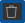
icon of the relevant alarm (e.g. Measles) > click on Confirm, and the alarm with its associated alert/alert data is deleted.
The following chapter gives further information about the different user profiles in EWARS and how to add assignments for them.